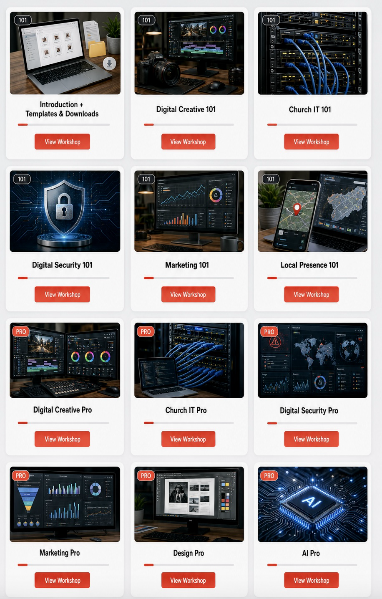
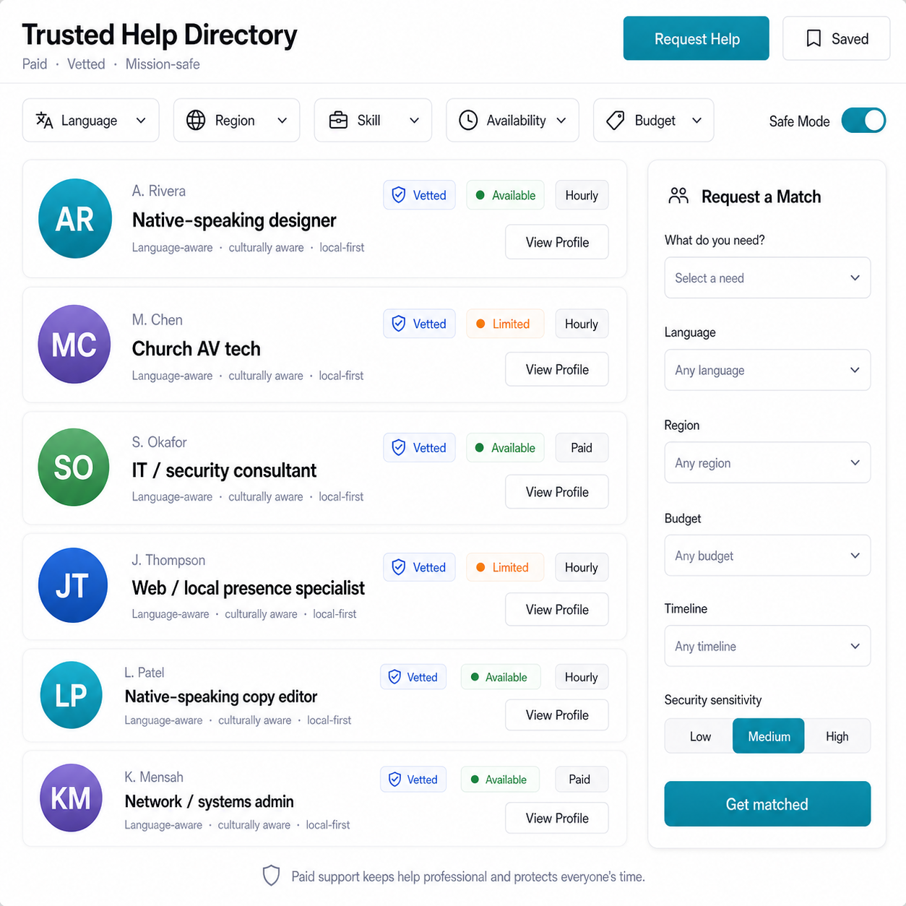

When a missionary has a guide for the digital side of ministry, the work stops draining their week, and the people who sent them stay connected to it.
I work directly with missionaries to design the systems that fit their field, so the digital side stops eating their time and starts feeding the ministry.
We start with the missionary's real situation: their phone, their bandwidth, and the tools they already use. Then we find what's slowing them down.
Together we build the workflows and templates that fit their field, so updates, prayer letters, and posts stop starting from a blank page.
We set it up so the missionary can run it themselves, with coaching and check-ins whenever a season gets heavy.
Most supporters never see this part of the work. A guide beside them changes it, and the missionary stops carrying it alone.
A real workflow from a missionary we coach, shared with permission.
Two builds will carry this past one-on-one coaching: a school a pastor can hand off, and a network of vetted help.
So a pastor can hand the digital work to a church member or spouse instead of carrying it. Ready-to-run workflows and systems, built to pass off, in five major languages.

In-progress preview: the workshop library.
A vetted, paid pro a missionary can call when a job is past the tutorials. Native-speaking, culture-aware creatives and technical help, only when they need it.

In-progress preview: the vetted help directory.
Sixty-five dollars a month gives one missionary a month of digital care: a communication rhythm built for their field, the templates and workflows behind it, privacy and security guidance, and a monthly call to walk through what's next.
The work that's live today, I fund myself. Sponsorship goes straight to a missionary's care, and giving will be reviewed by our board, so it stays accountable from day one.
This is steady, personal care beside one missionary. Want to see the full plan and how funds are handled? That's what the call is for.
This work has been shaped by extended research and direct conversations with missionaries and ministry leaders serving across five continents, from Madagascar and Senegal to Romania, Portugal, Australia, Guatemala, Honduras, Burma, and Thailand.
The pattern was consistent. Missionaries don't need to be convinced digital tools matter. They need someone to help them take the next right step without adding more weight. I research what works, then build the templates and workflows a missionary can run from their phone.
For $65 a month: their coaching, the templates and workflows behind it, and a monthly call. Have questions, or want to help build what's next? Pick a time below. It's a thirty-minute call, no pressure.